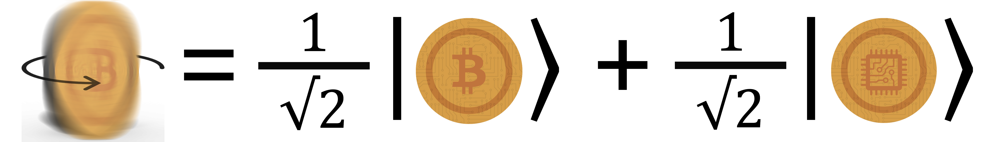

- Introduction to the Fundamentals of Quantum Computing
- Quantum Subsystems (Represented as Qubits)
- Quantum Superposition of States
- Quantum Superposition through Practical Experiments/Examples
- Quantum Entanglement of States
- Quantum Teleportation
- Initialisation of Quantum Subsystems
- Reversibility of Quantum Subsystems
- Quantum Operations (Quantum Logic Gates)
- Quantum Systems (Represented as Quantum Circuits)
- Uncertainty Principle (in Quantum States)
- Quantum Measurement of States
- Quantum Coherence and Decoherence
- Rutherford's Scattering
- Quantum Parallelism
- Existence of Quantum Multiverse
- This week will contain theoretical lectures and practical exercises
-

- This work is licensed under a Creative Commons Attribution-NonCommercial-NoDerivatives 4.0 International License.

📍 Select a topic:
⚠️ Notes:
©️ License:
The Fundamentals of Quantum Computing (Week 7)
Core 1 - Introduction to Quantum
 Rúben André Barreiro
Rúben André Barreiro
Introduction to the Fundamentals of Quantum Computing
-
Let's start with the following quote to reflect about the Fundamentals of Quantum Computing:
-
"Classical Computation is like a solo voice - one line of pure tones succeeding each other.
Quantum Computation is like a symphony - many lines of tones interfering with one another."
- Seth Lloyd
-
-
The 14 most relevant principles and properties of Quantum Physics/Mechanics that are on the basis of Quantum Computing,
allowing its current development, are the following:- Quantum Subsystems (Represented as Qubits)
- Quantum Superposition of States
- Quantum Entanglement of States
- Quantum Teleportation
- Initialisation of Quantum Subsystems
- Reversibility of Quantum Subsystems
- Quantum Operations (Quantum Logic Gates)
- Quantum Systems (Represented as Quantum Circuits)
- Uncertainty Principle (in Quantum States)
- Quantum Measurement of States
- Quantum Coherence and Decoherence
- Rutherford's Scattering
- Quantum Parallelism
- Existence of Quantum Multiverse
The most relevant principles and properties of Quantum Physics/Mechanics and Quantum Computing
Quantum Subsystems (Represented as Qubits)
-
In an ordinary Classical RAM hardware module, the common Quantum State of several electrons is interpreted as only one Classical Bit.
-
The logical state is determined by the expectation value of its register contents (i.e., tension of a capacitor).
-
The interpretation as Classical Bits is performed by comparing the measured value to a defined threshold,
while the great number of particles guarantees that the uncertainty of the measurement is small enough
$ \Bigl( O\Bigl(\frac{1}{\sqrt{n}}\Bigr) \Bigr) $ to make errors practically impossible. -
$P(Errors\ in\ Classical\ Computations) = 10^{-9}$,
i.e., the acceptable minimum values for B.E.R. (Bit Error Rate). -
$P(Errors\ in\ Quantum\ Computations) = 10^{-3}$,
i.e., the current acceptable minimum values for Q.B.E.R. (Quantum Bit Error Rate). -
In a Quantum Computer, the information is represented directly as the common Quantum State of many Quantum Subsystems
(i.e., Qubits or Quantum Bits). -
Each Quantum Subsystem is described by a combination of two "pure" states (i.e., "pure" basis or basis states) interpreted as \(\left |0 \right>\) and \(\left |1 \right>\).
-
This combinations can be made by many forms, like per example:
-
Spin of a Particle:


-
Polarisation of a Photon:

-
Ground and Excited States of an Ion:


-
Spin of a Particle:
Quantum Superposition of States
-
The Quantum Superposition of States is one of the most important fundamental principles of Quantum Physics/Mechanics.
-
In the Quantum World, a particle would have a Quantum State,
which can be seen as being composed by more than one other different and simultaneous Quantum States also. -
This principle states that, any two (or more) Quantum States can be added together (i.e., "superposed") and
the result will be another valid Quantum State,
represented by the sum of the values of the same two (or more) Quantum States. -
These Quantum States, when "superposed", are both occurring at the same time.
-
For example, in a Quantum Superposition of States A and B, it's not occurring the Quantum State A or the Quantum State B,
but occurring the Quantum State A and the Quantum State B, at the same exactly moment!!! -
This defies the Classical Interpretation of the World we used to, where some object have never two states at the same time.
-
For example, a lamp bulb never can be turned on and turned off, or, a statement are never true and false, at the same exactly time.
-
This it's what's we commonly called, for so long, the Duality Principle, and it's also,
one of the basis for the data processing in the Classical Computing paradigm. -
In mathematic terms, it refers to a property of solutions to the Schrödinger's Equation,
because since the Schrödinger's Equation is linear, any linear combination of solutions will also be a solution. -
A general and generic Quantum State it's represented as an equation of this kind:
-
$ \left| Ψ(t) \right> = \sum_{n} C_{n}(t) \left| Φ_{n} \right> $
-
-
One of the most common examples of this fundamental principle is the state of a Qubit (Quantum Bit),
based in the previously mentioned Duality Principle and as used in Quantum Computing and Quantum Information Processing,
which is Quantum Superposition of the "Basis States" (i.e., $ \left| 0 \right> $ and $ \left| 1 \right> $), where $ α $ and $ β $ are amplitutes of the probabilities of occurring $ \left| 0 \right> $ and $ \left| 1 \right> $,
respectively:-
$ Qubit = α\left| 0 \right> + β\left| 1 \right> $
-
-
Where, the Quantum State 0 could be off, false, with no signal, not working, not finished, etc., in a negative fashion.
-
And, in opposite direction, the Quantum State 1 could be on, true, with signal, working, finished, etc., in a positive fashion.
-
Each one of the components (i.e., possibilities) associated to a Quantum State have a probability associated of happening in the Classical World,
because we can only observe concrete, absolute and deterministic aspects in the Classical World, as we know... -
But in the Quantum World, all this possibilities are always happening at the same time, with a such probability associated,
in a non-concrete, non-absolute and non-deterministic fashion!!! -
Likely, in a Distribution of Probabilities with Discrete Values, the sum of the values of the Quantum States in a
Quantum Superposition of States must always be equal to 1.0 (100 %). -
Thus, the probabilities of occurring each state in a Quantum Superposition of States are, in general, neither 0.0 (0 %) nor 1.0 (100 %).
-
The sum of the probabilities of occurring $ \left| 0 \right> $ and $ \left| 1 \right> $ in a Quantum Superposition of States, can be calculated by the sum of its absoulte values
(i.e., its modulo values) squared, as the following presented:-
$ |α|^2 + |β|^2 = 1 $, where $ α $, $ β $ $ \in [0,1] $
-
-
A completely equilibrated Quantum Superposition of States with only two possible Quantum States
(i.e., with 50%/50% probability of occurring to both states), can have its probabilities calculated as the following, with $ α = \frac{1}{\sqrt{2}} $ and $ β = \frac{1}{\sqrt{2}} $:-
$ |α|^2 + |β|^2 = 1 \Leftrightarrow |\frac{1}{\sqrt{2}}|^2 + |\frac{1}{\sqrt{2}}|^2 = 1 \Leftrightarrow (\frac{1}{\sqrt{2}})^2 + (\frac{1}{\sqrt{2}})^2 = 1 \Leftrightarrow \Bigl(\frac{1^2}{(\sqrt{2})^2}\Bigr) + \Bigl(\frac{1^2}{(\sqrt{2})^2}\Bigr) = 1 \Leftrightarrow \frac{1}{2} + \frac{1}{2} = 1 \Leftrightarrow 1 = 1 $
-
-
This is also possible to calculate, through a Equation System with 2 variables:
-
\begin{aligned}[left*] \begin{cases} α = \frac{1}{\sqrt{2}}\\ \\ β = \frac{1}{\sqrt{2}}\\ \\ |α|^2 + |β|^2 = 1 \Leftrightarrow |\frac{1}{\sqrt{2}}|^2 + |\frac{1}{\sqrt{2}}|^2 = 1 \Leftrightarrow (\frac{1}{\sqrt{2}})^2 + (\frac{1}{\sqrt{2}})^2 = 1 \Leftrightarrow \Bigl(\frac{1^2}{(\sqrt{2})^2}\Bigr) + \Bigl(\frac{1^2}{(\sqrt{2})^2}\Bigr) = 1 \Leftrightarrow \frac{1}{2} + \frac{1}{2} = 1 \Leftrightarrow 1 = 1\hspace{400ex} \end{cases} \end{aligned}
-
-
Therefore, it's obtained the following values for $α$ and $β$:
-
$ \therefore α = \frac{1}{\sqrt{2}} $ ∧ $ β = \frac{1}{\sqrt{2}} $
-
-
So, in graphically terms, the previously mentioned properties of the Fundamental Principle of Quantum Superposition of States
can be represented as the following: -
-
Other example of a physically observable manifestation of the wave nature of quantum systems is the interference peaks from an electron beam in a double-slit experiment, where the obtained projected pattern is very similar to the one obtained by diffraction of classical waves, similiarly to the presented as the following:
-
-

-

-
"To be really honest with you, at this moment,
I feel myself like I'm inside of some kind of Quantum Superposition of States of
understand this principle and don't understand it all!!!" -
"But I feel like I'm eventually getting there sooner or later...
Maybe, one day, I'll be also in another kind of Quantum Superposition of State about what type of Engineer I really am,
because I don't know it at this moment...
I'm feeling like a Computer Science Engineer and Physics Engineer simultaneously, at the same time...
I'm starting to feel a little genius like Albert Einstein growing inside of me!!!" -
"Unfortunately, to my own disappointment,
in the Real Classical World, I just can be only one of them..." -
"But not everything is lost, because in the Probabilistic and Non-Deterministic Quantum World,
I can imagine the both possibilities, in simultaneous!!!"
Quantum Superposition through Practical Experiments/Examples
-
Schrödinger's Cat Practical Experiment:
-
This it's simply a direct and practical appliance of the Fundamental Principle of Quantum Superposition of States through an experiment...
-
This practical experiment, proposed by Erwin Schrödinger, in 1935, it's frequently described as a paradox.
-
This experiment illustrates a cat locked inside of a mysterious/black box,
along with a device (which must be secured against direct interference by the cat). -
This device contains a tiny bit of a small radioactive substance, which can decay or not, and, through a certain mechanism,
release or not a hammer that shatters a small flask of hydrocyanic acid capable of kill the cat closed inside the mysterious/black box. -
This mysterious/black box after be closed, it's sealed, as also, isolated, protected and secure against external environment's behaviours
which cause Quantum Incoherence. -
And let's imagine that if an internal monitor (e.g., Geiger Counter) detects radioactivity (i.e. a single Atom decaying) from
the radioactive substance, the mechanism responsible for release or not the hammer, will be activated and
will break the flask containing the poisoned content!!! -
Let's assume the radioactive substance can release the poisoned content or not, and thus, killing the cat or not, with exactly equal probability
(i.e., 50%/50% of probability for both situations), when this mysterious/black box is about to be opened... -
This mechanism only can be used once, i.e., it will stop of being operational after open the previously described mysterious/black box,
for the very first time... -
So, in graphically terms, this practical experiment of Quantum Superposition of States can be represented as the following:
-
-
-
Flipping a Coin Experiment:
-
-
So, in graphically terms, this practical experiment of Quantum Superposition of States can be represented as the following:
-

-

-
-
-
Star Wars' Force Balance Example:
-
-
Bruce Wayne's Dilemma Example:
-
-
Iron Man Saving the World:
-
-
Harry Potter and Sorting Hat's Dilemma:
-
-
Soccer Player - G.O.A.T. Discussion (Cristiano Ronaldo or Lionel Messi?):
-
-
Pringles' Paradox Example (Chips or Hyperbolic Paraboloids?):
-
-
Bagel, Pizza and Donut's Paradox Example:
-
-
Cylinder's Paradox Example:
-
-
Cone's Paradox Example:
-
-
Mixing Colors Example:
-


Quantum Entanglement of States
Quantum Teleportation
Initialisation of Quantum Subsystems
Reversibility of Quantum Subsystems
Quantum Operations (Quantum Logic Gates)
-
A final review of the Quantum Logic Operators, can be demonstrated by the following table:
Type of Operator Operator # Operator Name Gate Representation #1 Gate Representation #2 Matrix Representation Description and Details Single Qubit
Quantum
Logic Gates1 Idle (I) $$ I = \begin{bmatrix} 1 & 0 \\ 0 & 1 \\ \end{bmatrix}\\ $$ $ (Identity \ Matrix) $ 2 Hadamard (H) $$ H = \begin{bmatrix} \frac{1}{\sqrt{2}} & \frac{1}{\sqrt{2}} \\ \frac{1}{\sqrt{2}} & -\frac{1}{\sqrt{2}} \\ \end{bmatrix} $$ $ (Hadamard \ Matrix) $ - Rotates (or flips) the Qubit 180° (π radians) around the axis $ \frac{(X+Z)}{\sqrt{2}} $ of the Bloch Sphere;
- Creates a Quantum Superposition of States when applied at the Basis $ \left| 0 \right> $ or $ \left| 1 \right> $ of the Bloch Sphere;
3 Pauli-X (X) $$ X = \begin{bmatrix} 0 & 1 \\ 1 & 0 \\ \end{bmatrix} $$ $ (Pauli-X\ \ Matrix) $ -
Rotates (or flips) the Qubit 180° (π radians) around the X-axis of the Bloch Sphere;
-
It's equivalent to the Classical NOT Gate;
-
Don't result at any changes to the Quantum Basis States $ \left| + \right> $ and $ \left| - \right> $:
-
$ \left| + \right> \rightarrow \left| + \right> $;
-
$ \left| - \right> \rightarrow \left| - \right> $;
-
-
Performs the following Mappings to the Quantum Basis States $ \left| +i \right> $ and $ \left| -i \right> $:
-
$ \left| +i \right> \rightarrow \left| -i \right> $;
-
$ \left| -i \right> \rightarrow \left| +i \right> $;
-
-
Performs the following Mappings to the Quantum Basis States $ \left| 0 \right> $ and $ \left| 1 \right> $:
-
$ \left| 0 \right> \rightarrow \left| 1 \right> $;
-
$ \left| 1 \right> \rightarrow \left| 0 \right> $;
-
4 Pauli-Y (Y) $$ Y = \begin{bmatrix} 0 & -i \\ i & 0 \\ \end{bmatrix}\ ( \ i \in \mathbb{C} \ ) $$ $ (Pauli-Y\ \ Matrix) $ - Rotates (or flips) the Qubit 180° (π radians) around the Y-axis of the Bloch Sphere;
-
Performs the following Mappings to the Quantum Basis States $ \left| + \right> $ and $ \left| - \right> $:
-
$ \left| + \right> \rightarrow \left| - \right> $;
-
$ \left| - \right> \rightarrow \left| + \right> $;
-
-
Don't result at any changes to the Quantum Basis States $ \left| +i \right> $ and $ \left| -i \right> $:
-
$ \left| +i \right> \rightarrow \left| +i \right> $;
-
$ \left| -i \right> \rightarrow \left| -i \right> $;
-
-
Performs the following Mappings to the Quantum Basis States $ \left| 0 \right> $ and $ \left| 1 \right> $:
-
$ \left| 0 \right> \rightarrow \left| 1 \right> $;
-
$ \left| 1 \right> \rightarrow \left| 0 \right> $;
-
5 Pauli-Z (Z) $$ Z = \begin{bmatrix} 1 & 0 \\ 0 & -1 \\ \end{bmatrix} $$ $ (Pauli-Z\ \ Matrix) $ - Rotates (or flips) the Qubit 180° (π radians) around the Z-axis of the Bloch Sphere;
-
Performs the following Mappings to the Quantum Basis States $ \left| + \right> $ and $ \left| - \right> $:
-
$ \left| + \right> \rightarrow \left| - \right> $;
-
$ \left| - \right> \rightarrow \left| + \right> $;
-
-
Performs the following Mappings to the Quantum Basis States $ \left| +i \right> $ and $ \left| -i \right> $:
-
$ \left| +i \right> \rightarrow \left| -i \right> $;
-
$ \left| -i \right> \rightarrow \left| +i \right> $;
-
-
Don't result at any changes to the Quantum Basis States $ \left| 0 \right> $ and $ \left| 1 \right> $:
-
$ \left| 0 \right> \rightarrow \left| 0 \right> $;
-
$ \left| 1 \right> \rightarrow \left| 1 \right> $;
-
6 Phase(S,P) - \begin{aligned}[left*] Z = \begin{bmatrix} 1 & 0 \\ 0 & -1 \end{bmatrix}\hspace{2ex} \end{aligned}
- Rotates (or flips) the Qubit 180° (π radians) around the Z-axis of the Bloch Sphere;
7 $ \frac{π}{8}$ (T) cell3_5 cell4_5 cell5_5 cell6_5 Multi Qubit
Quantum
Logic Gates8 Controlled-X
(Controlled-NOT, CNOT, CX)cell3_6 cell4_6 - \begin{aligned}[left*] C_X = \begin{bmatrix} 1 & 0 & 0 & 0\\ 0 & 1 & 0 & 0\\ 0 & 0 & 0 & 1\\ 0 & 0 & 1 & 0 \end{bmatrix}\hspace{2ex} \end{aligned}
- Acts on 2 or more Qubits, where 1 (or more) Qubits act as a control value for some operation;
- It's similar to a Classical Conditional clause/procedure (If... Then... Else);
9 Controlled-Y (CY) cell3_7 cell4_7 - \begin{aligned}[left*] C_Y = \begin{bmatrix} 1 & 0 & 0 & 0\\ 0 & 1 & 0 & 0\\ 0 & 0 & 0 & -i\\ 0 & 0 & i & 0 \end{bmatrix}\hspace{0.5ex}( \ i \in \mathbb{C} \ ) \hspace{2ex} \end{aligned}
- Acts on 2 or more Qubits, where 1 (or more) Qubits act as a control value for some operation;
- It's similar to a Classical Conditional clause/procedure (If... Then... Else);
10 Controlled-Z (CZ) cell3_7 cell4_7 - \begin{aligned}[left*] C_Z = \begin{bmatrix} 1 & 0 & 0 & 0\\ 0 & 1 & 0 & 0\\ 0 & 0 & 1 & 0\\ 0 & 0 & 0 & -1 \end{bmatrix}\hspace{2ex} \end{aligned}
- Acts on 2 or more Qubits, where 1 (or more) Qubits act as a control value for some operation;
- It's similar to a Classical Conditional clause/procedure (If... Then... Else);
11 Controlled-U (CU) cell3_7 cell4_7 - \begin{aligned}[left*] C_U = \begin{bmatrix} 1 & 0 & 0 & 0\\ 0 & 1 & 0 & 0\\ 0 & 0 & U_{00} & U_{01}\\ 0 & 0 & U_{10} & U_{11} \end{bmatrix}\hspace{2ex} \end{aligned}
- Acts on 2 or more Qubits, where 1 (or more) Qubits act as a control value for some operation;
- It's similar to a Classical Conditional clause/procedure (If... Then... Else);
11 SWAP cell3_7 cell4_7 - \begin{aligned}[left*] SWAP = \begin{bmatrix} 1 & 0 & 0 & 0\\ 0 & 0 & 1 & 0\\ 0 & 1 & 0 & 0\\ 0 & 0 & 0 & 1 \end{bmatrix}\hspace{2ex} \end{aligned}
- Swaps 2 Qubits with respect to the basis $ \left| 00 \right> $, $ \left| 01 \right> $, $ \left| 10 \right> $, $ \left| 11 \right> $;
12 Toffoli
(CCNOT, CCX, TOFF)cell3_7 cell4_7 - \begin{aligned}[left*] Toffoli = \begin{bmatrix} 1 & 0 & 0 & 0 & 0 & 0 & 0 & 0\\ 0 & 1 & 0 & 0 & 0 & 0 & 0 & 0\\ 0 & 0 & 1 & 0 & 0 & 0 & 0 & 0\\ 0 & 0 & 0 & 1 & 0 & 0 & 0 & 0\\ 0 & 0 & 0 & 0 & 1 & 0 & 0 & 0\\ 0 & 0 & 0 & 0 & 0 & 1 & 0 & 0\\ 0 & 0 & 0 & 0 & 0 & 0 & 0 & 1\\ 0 & 0 & 0 & 0 & 0 & 0 & 1 & 0 \end{bmatrix}\hspace{2ex} \end{aligned}
- Reversible gate, which means that its output can be reconstructed from its input (the states are moved around with no increase in physical entropy);
- Has 3 Qubits' inputs and outputs;
- If the first 2 Qubits' values are both set to 1, it inverts the 3rd Qubit's value;
- Otherwise, if the first 2 Qubits' values are both set to 0, all the Qubits' values remain the same;
Other
Quantum
Logic Gates13 Measurement cell3_7 N/A N/A - Takes (and collapses) a Qubit in a Quantum Superposition of States as input;
- Spits the measured outcome into either a 0 or 1, accordingly to the respectively related probabilities;